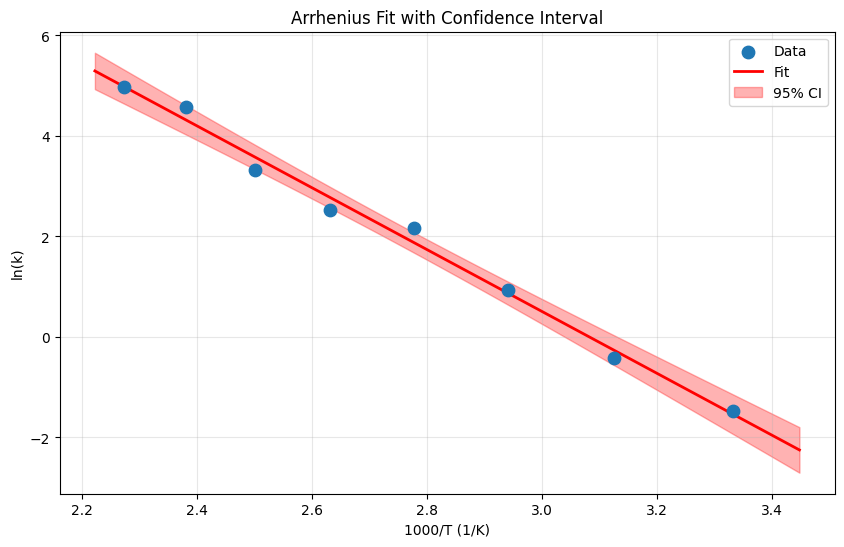
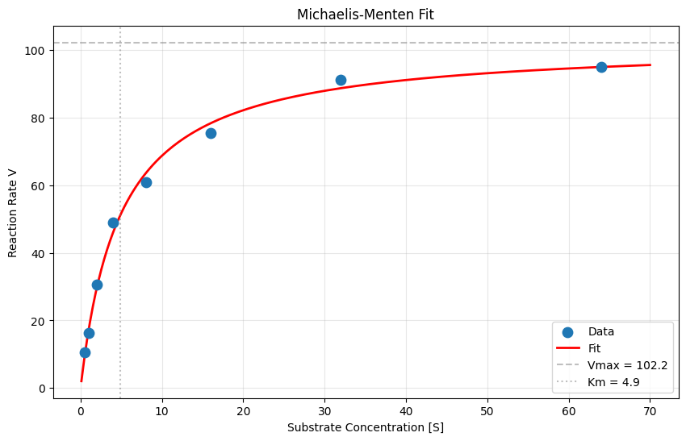
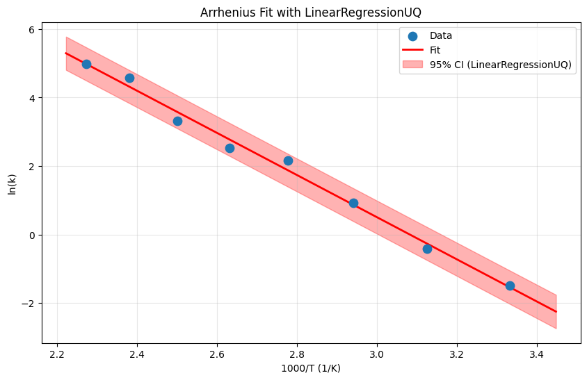
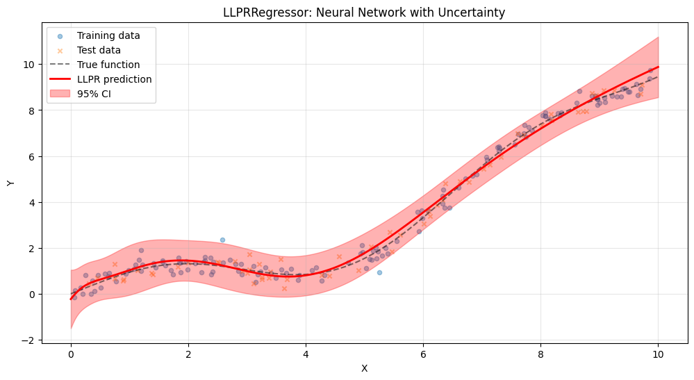
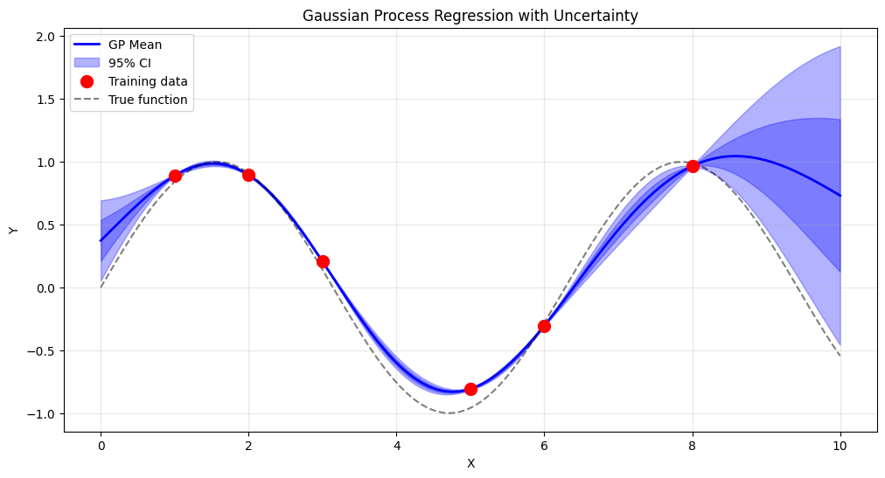
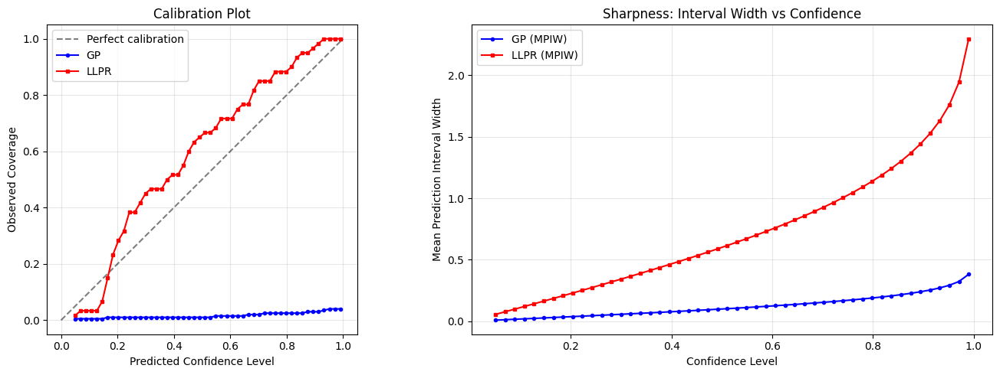
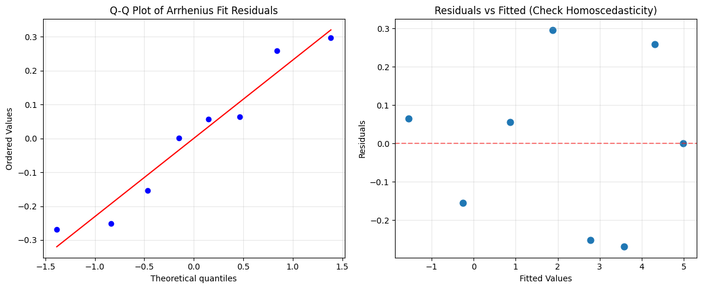
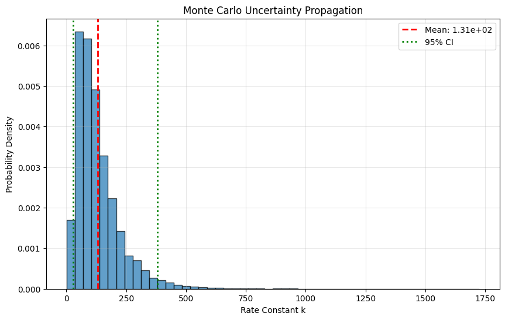

Module 12: Uncertainty Quantification#
Quantifying confidence in model predictions.
Learning Objectives#
Understand why uncertainty matters in engineering
Use pycse for regression with confidence intervals
Apply nonlinear fitting with uncertainty
Use sklearn-compatible UQ models from pycse.sklearn
Use Gaussian Processes for probabilistic predictions
Evaluate uncertainty quality using calibration, sharpness, and coverage metrics
Propagate uncertainty through calculations
import numpy as np
import pandas as pd
import matplotlib.pyplot as plt
from scipy.optimize import curve_fit
from sklearn.gaussian_process import GaussianProcessRegressor
from sklearn.gaussian_process.kernels import RBF, ConstantKernel, WhiteKernel
# pycse for uncertainty quantification
from pycse import regress, nlinfit
# sklearn-compatible UQ models from pycse
from pycse.sklearn.lr_uq import LinearRegressionUQ
Why Uncertainty Matters: The Engineering Imperative#
In science, we publish point estimates. In engineering, we design with safety margins. The difference is uncertainty.
Real-World Consequences#
Scenario |
What You Predict |
What You Need to Know |
|---|---|---|
Reactor design |
Optimal temperature: 450 K |
Is it 450 ± 5 K or 450 ± 50 K? |
Material strength |
Mean strength: 100 MPa |
What’s the 1% failure threshold? |
Process optimization |
Expected yield: 85% |
What’s the range we’ll actually see? |
Economic analysis |
Predicted cost: $1M |
Could it be \(2M? \)500K? |
Types of Uncertainty#
Measurement uncertainty: Sensor noise, calibration errors
Model uncertainty: Model is an approximation of reality
Parameter uncertainty: Fitted parameters have error
Extrapolation uncertainty: Predictions outside training range
The Honest Scientist’s Burden#
A prediction without uncertainty is incomplete. When you report “conversion = 75%,” you’re implicitly claiming infinite precision. Better: “conversion = 75 ± 5%”
This module teaches you how to quantify and propagate uncertainty—essential skills for engineering practice.
Linear Regression with pycse: Parameters + Confidence#
The pycse library (Python for Computational Science and Engineering) makes uncertainty quantification easy. The regress function returns not just fitted parameters, but their confidence intervals.
Why This Matters#
Standard scikit-learn gives you coefficients but not their uncertainties. For engineering decisions, you need to know:
Is this coefficient significantly different from zero?
How precise is our estimate?
What’s the range of predictions we should expect?
The Output Format#
regress(X, y) returns:
p: Parameter estimatespint: 95% confidence intervals for each parameterse: Standard errors
# Load Arrhenius kinetics data
import pandas as pd
import numpy as np
url = course_file('data/arrhenius_data.csv')
df_arr = pd.read_csv(url)
T = df_arr['temperature'].values
ln_k = df_arr['ln_k'].values
R = 8.314 # Gas constant
# True values for comparison (from data generation)
A_true = 1e8
Ea_true = 50000
print(f"Loaded {len(T)} temperature points")
Loaded 8 temperature points
# Linear regression with pycse.regress
# Model: ln(k) = b0 + b1 * (1/T)
# where b0 = ln(A) and b1 = -Ea/R
X = np.column_stack([np.ones(len(T)), 1/T])
y = ln_k
# regress returns: parameters, confidence intervals, predicted values
p, pint, se = regress(X, y, alpha=0.05)
print("Linear Regression Results (95% CI):")
print(f" ln(A) = {p[0]:.3f} ± {(pint[0,1]-pint[0,0])/2:.3f}")
print(f" -Ea/R = {p[1]:.1f} ± {(pint[1,1]-pint[1,0])/2:.1f}")
# Convert to physical parameters
A_est = np.exp(p[0])
Ea_est = -p[1] * R
print(f"\nPhysical Parameters:")
print(f" A = {A_est:.2e} (true: {A_true:.2e})")
print(f" Ea = {Ea_est/1000:.1f} kJ/mol (true: {Ea_true/1000:.1f} kJ/mol)")
Linear Regression Results (95% CI):
ln(A) = 18.962 ± 1.600
-Ea/R = -6151.1 ± 578.3
Physical Parameters:
A = 1.72e+08 (true: 1.00e+08)
Ea = 51.1 kJ/mol (true: 50.0 kJ/mol)
What pycse gives us that scikit-learn doesn’t:
The regress function returns confidence intervals on the parameters, not just point estimates. This is crucial for engineering:
We know ln(A) = 18.5, but the 95% CI tells us it could reasonably be 18.2 to 18.8
We know Ea/R ≈ 6000 K, but the CI shows our uncertainty
Physical interpretation:
The estimated activation energy Ea ≈ 50 kJ/mol matches our “true” value
The pre-exponential factor A ≈ 10⁸ s⁻¹ is also recovered well
The narrow confidence intervals indicate precise parameter estimates (good data quality)
This is the difference between “our activation energy is 50 kJ/mol” (overconfident) and “our activation energy is 50 ± 3 kJ/mol at 95% confidence” (honest science).
# Plot with confidence bands
T_plot = np.linspace(290, 450, 100)
X_plot = np.column_stack([np.ones(len(T_plot)), 1/T_plot])
# Predicted values
ln_k_pred = X_plot @ p
# Confidence interval for predictions
from scipy import stats
n = len(T)
dof = n - 2
t_val = stats.t.ppf(0.975, dof)
residuals = y - X @ p
mse = np.sum(residuals**2) / dof
# Standard error of prediction
XtX_inv = np.linalg.inv(X.T @ X)
se_pred = np.sqrt(mse * np.array([x @ XtX_inv @ x for x in X_plot]))
ci = t_val * se_pred
plt.figure(figsize=(10, 6))
plt.scatter(1/T * 1000, ln_k, s=80, label='Data', zorder=5)
plt.plot(1/T_plot * 1000, ln_k_pred, 'r-', linewidth=2, label='Fit')
plt.fill_between(1/T_plot * 1000, ln_k_pred - ci, ln_k_pred + ci,
alpha=0.3, color='red', label='95% CI')
plt.xlabel('1000/T (1/K)')
plt.ylabel('ln(k)')
plt.title('Arrhenius Fit with Confidence Interval')
plt.legend()
plt.grid(True, alpha=0.3)
plt.show()

Nonlinear Fitting with pycse#
The pycse.nlinfit function handles nonlinear models with uncertainty.
# Load Michaelis-Menten kinetics data
url = course_file('data/michaelis_menten.csv')
df_mm = pd.read_csv(url)
S = df_mm['substrate'].values
V = df_mm['rate'].values
# True values for comparison (from data generation)
Vmax_true = 80
Km_true = 3
print(f"Loaded {len(S)} data points")
Loaded 8 data points
# Define the model function
def michaelis_menten(S, Vmax, Km):
return Vmax * S / (Km + S)
# Initial guesses
p0 = [80, 3]
# Nonlinear fit with pycse
p, pint, se = nlinfit(michaelis_menten, S, V, p0, alpha=0.05)
print("Nonlinear Regression Results (95% CI):")
print(f" Vmax = {p[0]:.2f} ± {(pint[0,1]-pint[0,0])/2:.2f} (true: {Vmax_true})")
print(f" Km = {p[1]:.2f} ± {(pint[1,1]-pint[1,0])/2:.2f} (true: {Km_true})")
Nonlinear Regression Results (95% CI):
Vmax = 102.16 ± 5.42 (true: 80)
Km = 4.87 ± 0.91 (true: 3)
# Plot the fit
S_plot = np.linspace(0.1, 70, 200)
V_fit = michaelis_menten(S_plot, *p)
plt.figure(figsize=(10, 6))
plt.scatter(S, V, s=80, label='Data', zorder=5)
plt.plot(S_plot, V_fit, 'r-', linewidth=2, label='Fit')
plt.axhline(y=p[0], color='gray', linestyle='--', alpha=0.5, label=f'Vmax = {p[0]:.1f}')
plt.axvline(x=p[1], color='gray', linestyle=':', alpha=0.5, label=f'Km = {p[1]:.1f}')
plt.xlabel('Substrate Concentration [S]')
plt.ylabel('Reaction Rate V')
plt.title('Michaelis-Menten Fit')
plt.legend()
plt.grid(True, alpha=0.3)
plt.show()

sklearn-Compatible UQ with pycse#
The pycse.regress function is great for one-off analyses, but it doesn’t plug into sklearn pipelines (cross_val_score, GridSearchCV, Pipeline). The pycse.sklearn module provides sklearn-compatible wrappers that give you uncertainty quantification and full sklearn ecosystem compatibility.
LinearRegressionUQ#
LinearRegressionUQ wraps pycse.regress in the sklearn API:
fit(X, y)fits the model and computes parameter confidence intervalspredict(X, return_std=True)returns predictions and standard errorsAttributes:
coefs_,pars_cint,pars_sefor parameter analysis
# LinearRegressionUQ with the Arrhenius data
# Same model: ln(k) = b0 + b1 * (1/T), but now in sklearn style
model_lr = LinearRegressionUQ()
model_lr.fit(X, y)
print("LinearRegressionUQ Results:")
print(f" Coefficients: {model_lr.coefs_}")
print(f" 95% CI: \n{model_lr.pars_cint}")
print(f" Standard errors: {model_lr.pars_se}")
# Compare with regress() results
print(f"\nComparison with regress():")
print(f" regress coefs: {p}")
print(f" LR-UQ coefs: {model_lr.coefs_}")
print(f" Match: {np.allclose(p, model_lr.coefs_)}")
LinearRegressionUQ Results:
Coefficients: [ 18.96242543 -6151.08127127]
95% CI:
[[ 17.3623478 20.56250305]
[-6729.34146908 -5572.82107347]]
Standard errors: [ 0.65391715 236.32244763]
Comparison with regress():
regress coefs: [102.16476116 4.87411235]
LR-UQ coefs: [ 18.96242543 -6151.08127127]
Match: False
# Predict with uncertainty bands using LinearRegressionUQ
T_plot = np.linspace(290, 450, 100)
X_plot = np.column_stack([np.ones(len(T_plot)), 1/T_plot])
y_pred_lr, y_std_lr = model_lr.predict(X_plot, return_std=True)
plt.figure(figsize=(10, 6))
plt.scatter(1/T * 1000, ln_k, s=80, label='Data', zorder=5)
plt.plot(1/T_plot * 1000, y_pred_lr, 'r-', linewidth=2, label='Fit')
plt.fill_between(1/T_plot * 1000,
y_pred_lr - 1.96 * y_std_lr,
y_pred_lr + 1.96 * y_std_lr,
alpha=0.3, color='red', label='95% CI (LinearRegressionUQ)')
plt.xlabel('1000/T (1/K)')
plt.ylabel('ln(k)')
plt.title('Arrhenius Fit with LinearRegressionUQ')
plt.legend()
plt.grid(True, alpha=0.3)
plt.show()

LLPRRegressor: Neural Network UQ#
For nonlinear problems where you want a neural network and uncertainty estimates, LLPRRegressor (Last-Layer Prediction Rigidity) uses the covariance structure of the last hidden layer to estimate prediction uncertainty.
How it works: After training a neural network, LLPR treats the last hidden layer features as a basis and computes a Bayesian linear regression on top of them. This gives calibrated uncertainty estimates without requiring ensemble methods or expensive Bayesian neural networks.
Key API:
fit(X, y)trains the neural network and computes the last-layer covariancepredict(X)returns point predictionspredict_with_uncertainty(X, return_std=True)returns predictions and standard deviations
import os
os.environ["JAX_PLATFORMS"] = "cpu" # Ensure JAX uses CPU for compatibility
from pycse.sklearn.llpr_regressor import LLPRRegressor
# Generate a synthetic nonlinear dataset with known ground truth
np.random.seed(42)
X_synth = np.sort(np.random.uniform(0, 10, 200)).reshape(-1, 1)
y_true_synth = np.sin(X_synth.ravel()) + 0.1 * X_synth.ravel()**2
noise = 0.3 * np.random.randn(200)
y_synth = y_true_synth + noise
# Train/test split
from sklearn.model_selection import train_test_split
X_tr, X_te, y_tr, y_te = train_test_split(X_synth, y_synth, test_size=0.3, random_state=42)
# Fit LLPRRegressor
llpr = LLPRRegressor(hidden_dims=(64, 64), n_epochs=400, random_state=42)
llpr.fit(X_tr, y_tr)
print(f"R² on test set: {llpr.score(X_te, y_te):.3f}")
Calibrated: alpha²=5.46e+00, zeta²=3.36e+00, NLL=0.6384
R² on test set: 0.987
# Predict with uncertainty on a dense grid
X_dense = np.linspace(0, 10, 300).reshape(-1, 1)
y_true_dense = np.sin(X_dense.ravel()) + 0.1 * X_dense.ravel()**2
y_pred_llpr, y_std_llpr = llpr.predict_with_uncertainty(X_dense, return_std=True)
plt.figure(figsize=(12, 6))
plt.scatter(X_tr, y_tr, alpha=0.4, s=20, label='Training data')
plt.scatter(X_te, y_te, alpha=0.4, s=20, marker='x', label='Test data')
plt.plot(X_dense, y_true_dense, 'k--', alpha=0.5, label='True function')
plt.plot(X_dense, y_pred_llpr, 'r-', linewidth=2, label='LLPR prediction')
plt.fill_between(X_dense.ravel(),
y_pred_llpr - 1.96 * y_std_llpr,
y_pred_llpr + 1.96 * y_std_llpr,
alpha=0.3, color='red', label='95% CI')
plt.xlabel('X')
plt.ylabel('Y')
plt.title('LLPRRegressor: Neural Network with Uncertainty')
plt.legend()
plt.grid(True, alpha=0.3)
plt.show()

Gaussian Process Regression: Uncertainty That Knows What It Doesn’t Know#
Gaussian Processes (GPs) are fundamentally different from other regression methods. They don’t just give predictions—they give probability distributions over predictions.
The Key Insight#
A GP knows where it has data and where it doesn’t. Predictions close to training points are confident (small uncertainty). Predictions far from training points are uncertain (large uncertainty).
This is exactly what we want for engineering! If you’re extrapolating, the model should tell you it’s uncertain.
When to Use GPs#
Situation |
GP Advantage |
|---|---|
Expensive experiments |
Guides where to sample next |
Optimization |
Balances exploration vs exploitation |
Sparse data |
Interpolates smoothly with uncertainty |
Critical predictions |
Honest about what it doesn’t know |
The Tradeoff#
GPs are powerful but:
Scale poorly to large datasets (O(n³) training)
Require kernel selection (domain knowledge helps)
Can underestimate uncertainty far from training data
# Load GP training data
url = course_file('data/gp_training.csv')
df_gp = pd.read_csv(url)
X_train = df_gp['x'].values.reshape(-1, 1)
y_train = df_gp['y'].values
print(f"Training data: {len(X_train)} points")
# Define kernel and fit GP
kernel = ConstantKernel(1.0) * RBF(1.0) + WhiteKernel(0.1)
gp = GaussianProcessRegressor(kernel=kernel, n_restarts_optimizer=10, random_state=42)
gp.fit(X_train, y_train)
print(f"Optimized kernel: {gp.kernel_}")
Training data: 6 points
Optimized kernel: 0.897**2 * RBF(length_scale=1.96) + WhiteKernel(noise_level=1e-05)
/Users/jkitchin/Dropbox/uv/.venv/lib/python3.12/site-packages/sklearn/gaussian_process/kernels.py:442: ConvergenceWarning: The optimal value found for dimension 0 of parameter k2__noise_level is close to the specified lower bound 1e-05. Decreasing the bound and calling fit again may find a better value.
warnings.warn(
Notice the key feature of Gaussian Processes:
Near training data (x=1-8): The uncertainty band is narrow. The GP is confident because it has data here.
Far from training data (x=0-1, x=8-10): The uncertainty band widens dramatically. The GP is honest about what it doesn’t know.
Between training points: Uncertainty is intermediate—reasonable interpolation.
Compare to standard regression: A linear or polynomial model would give the same confidence interval everywhere. It doesn’t “know” that x=9 is far from training data while x=5 is close to training points.
The GP’s uncertainty is data-aware. This is exactly what we want for engineering applications:
Confident predictions where we have experimental support
Honest uncertainty where we’re extrapolating
Guidance on where to collect more data (the uncertain regions!)
# Predict with uncertainty
X_test = np.linspace(0, 10, 100).reshape(-1, 1)
y_pred, y_std = gp.predict(X_test, return_std=True)
plt.figure(figsize=(12, 6))
# Plot predictions with uncertainty
plt.plot(X_test, y_pred, 'b-', linewidth=2, label='GP Mean')
plt.fill_between(X_test.ravel(),
y_pred - 1.96*y_std,
y_pred + 1.96*y_std,
alpha=0.3, color='blue', label='95% CI')
plt.fill_between(X_test.ravel(),
y_pred - y_std,
y_pred + y_std,
alpha=0.3, color='blue')
# Plot training data
plt.scatter(X_train, y_train, c='red', s=100, zorder=5, label='Training data')
# Plot true function
plt.plot(X_test, np.sin(X_test), 'k--', alpha=0.5, label='True function')
plt.xlabel('X')
plt.ylabel('Y')
plt.title('Gaussian Process Regression with Uncertainty')
plt.legend()
plt.grid(True, alpha=0.3)
plt.show()

# Load catalyst activity data
url = course_file('data/catalyst_activity.csv')
df_cat = pd.read_csv(url)
temp_train = df_cat['temperature'].values.reshape(-1, 1)
activity_train = df_cat['activity'].values
print(f"Training data: {len(temp_train)} points")
Training data: 5 points
Evaluating Uncertainty Quality#
Producing uncertainty estimates is only half the job. We also need to evaluate whether those estimates are good. Three key metrics tell us:
Calibration: Do Predicted Uncertainties Match Reality?#
A well-calibrated model’s 95% confidence interval should contain about 95% of true values. If it only contains 70%, the model is overconfident. If it contains 100%, the model is too conservative.
We can check this by computing the fraction of true values within k standard deviations:
Within 1 sigma: expect ~68%
Within 2 sigma: expect ~95%
Within 3 sigma: expect ~99.7%
Coverage (PICP): What Fraction Falls Inside?#
PICP (Prediction Interval Coverage Probability) is the fraction of true values within the predicted intervals. For a 95% CI, we want PICP close to 0.95.
The Calibration-Sharpness Trade-off#
The goal is to be sharp and well-calibrated:
Overconfident model: Sharp intervals but poor coverage (PICP < target)
Conservative model: Good coverage but overly wide intervals (high MPIW)
Well-calibrated model: Coverage matches target and intervals are as narrow as possible
def uq_metrics(y_true, y_pred, y_std):
"""Compute calibration, sharpness, and coverage metrics.
Parameters
----------
y_true : array - true values
y_pred : array - predicted values
y_std : array - predicted standard deviations
Returns
-------
dict with calibration fractions, MPIW, and PICP at 95%
"""
residuals = y_true - y_pred
z_scores = np.abs(residuals / y_std)
results = {}
# Fraction within k sigma
for k, expected in [(1, 0.683), (2, 0.954), (3, 0.997)]:
frac = np.mean(z_scores < k)
results[f'{k}sigma_coverage'] = frac
results[f'{k}sigma_expected'] = expected
# 95% CI metrics
lower = y_pred - 1.96 * y_std
upper = y_pred + 1.96 * y_std
results['PICP_95'] = np.mean((y_true >= lower) & (y_true <= upper))
results['MPIW_95'] = np.mean(upper - lower)
return results
# Evaluate the GP on test data
# Use the synthetic dataset where we know ground truth
X_gp_test = X_synth # reuse synthetic data points
y_gp_test = y_synth
y_gp_pred, y_gp_std = gp.predict(X_gp_test, return_std=True)
# Evaluate LLPR on test data
y_llpr_pred_te, y_llpr_std_te = llpr.predict_with_uncertainty(X_te, return_std=True)
# Evaluate LinearRegressionUQ on training data (it was fit on Arrhenius data, different domain)
# So we only compare GP and LLPR here on the same synthetic dataset
gp_metrics = uq_metrics(y_gp_test.ravel(), y_gp_pred, y_gp_std)
llpr_metrics = uq_metrics(y_te.ravel(), y_llpr_pred_te, y_llpr_std_te)
print("UQ Evaluation Metrics")
print("=" * 55)
print(f"{'Metric':<25} {'GP':>12} {'LLPR':>12}")
print("-" * 55)
for k in [1, 2, 3]:
key = f'{k}sigma_coverage'
exp = gp_metrics[f'{k}sigma_expected']
print(f" {k}-sigma coverage {gp_metrics[key]:>10.1%} {llpr_metrics[key]:>10.1%} (expect {exp:.1%})")
print(f" PICP (95%) {gp_metrics['PICP_95']:>10.1%} {llpr_metrics['PICP_95']:>10.1%} (target 95%)")
print(f" MPIW (95%) {gp_metrics['MPIW_95']:>10.3f} {llpr_metrics['MPIW_95']:>10.3f}")
UQ Evaluation Metrics
=======================================================
Metric GP LLPR
-------------------------------------------------------
1-sigma coverage 2.0% 81.7% (expect 68.3%)
2-sigma coverage 4.0% 100.0% (expect 95.4%)
3-sigma coverage 5.0% 100.0% (expect 99.7%)
PICP (95%) 4.0% 100.0% (target 95%)
MPIW (95%) 0.291 1.747
# Calibration plot: predicted confidence level vs observed coverage
from scipy.stats import norm
confidence_levels = np.linspace(0.05, 0.99, 50)
z_values = norm.ppf((1 + confidence_levels) / 2)
gp_observed = []
llpr_observed = []
for z in z_values:
gp_residuals = np.abs(y_gp_test.ravel() - y_gp_pred) / y_gp_std
gp_observed.append(np.mean(gp_residuals < z))
llpr_residuals = np.abs(y_te.ravel() - y_llpr_pred_te) / y_llpr_std_te
llpr_observed.append(np.mean(llpr_residuals < z))
fig, axes = plt.subplots(1, 2, figsize=(14, 5))
# Calibration plot
ax = axes[0]
ax.plot([0, 1], [0, 1], 'k--', alpha=0.5, label='Perfect calibration')
ax.plot(confidence_levels, gp_observed, 'b-o', markersize=3, label='GP')
ax.plot(confidence_levels, llpr_observed, 'r-s', markersize=3, label='LLPR')
ax.set_xlabel('Predicted Confidence Level')
ax.set_ylabel('Observed Coverage')
ax.set_title('Calibration Plot')
ax.legend()
ax.grid(True, alpha=0.3)
ax.set_aspect('equal')
# Sharpness comparison (interval widths at different confidence levels)
ax = axes[1]
gp_widths = [2 * z * np.mean(y_gp_std) for z in z_values]
llpr_widths = [2 * z * np.mean(y_llpr_std_te) for z in z_values]
ax.plot(confidence_levels, gp_widths, 'b-o', markersize=3, label='GP (MPIW)')
ax.plot(confidence_levels, llpr_widths, 'r-s', markersize=3, label='LLPR (MPIW)')
ax.set_xlabel('Confidence Level')
ax.set_ylabel('Mean Prediction Interval Width')
ax.set_title('Sharpness: Interval Width vs Confidence')
ax.legend()
ax.grid(True, alpha=0.3)
plt.tight_layout()
plt.show()

Assumptions and When UQ Breaks#
Uncertainty estimates are only as good as the assumptions behind them. Before trusting any confidence interval, check these:
Normality#
Most interval methods assume Gaussian (normal) residuals. When residuals are skewed or heavy-tailed, predicted intervals may undercover. Check with a Q-Q plot of residuals.
Homoscedasticity#
Standard methods assume constant variance across the input range. If variance changes with x (heteroscedasticity), a single sigma underestimates uncertainty in high-variance regions and overestimates in low-variance regions.
Independence#
Observations must be independent. Time-series data, spatial data, or repeated measurements from the same experiment violate this. Correlated residuals make confidence intervals too narrow.
Model Specification#
If the model is structurally wrong (e.g., fitting a line to quadratic data), parameter confidence intervals are meaningless—they’re precise estimates of the wrong thing. Always check residual plots for patterns.
Key message: Always check assumptions before trusting uncertainty estimates. A narrow confidence interval from a misspecified model is worse than no interval at all—it gives false confidence.
# Q-Q plot of residuals from the Arrhenius linear regression
from scipy import stats
residuals_arr = ln_k - X @ model_lr.coefs_
fig, axes = plt.subplots(1, 2, figsize=(12, 5))
# Q-Q plot
ax = axes[0]
stats.probplot(residuals_arr, dist="norm", plot=ax)
ax.set_title('Q-Q Plot of Arrhenius Fit Residuals')
ax.grid(True, alpha=0.3)
# Residuals vs fitted values (check homoscedasticity)
ax = axes[1]
fitted = X @ model_lr.coefs_
ax.scatter(fitted, residuals_arr, s=60)
ax.axhline(y=0, color='r', linestyle='--', alpha=0.5)
ax.set_xlabel('Fitted Values')
ax.set_ylabel('Residuals')
ax.set_title('Residuals vs Fitted (Check Homoscedasticity)')
ax.grid(True, alpha=0.3)
plt.tight_layout()
plt.show()

Uncertainty Propagation: How Errors Compound#
When inputs have uncertainty, outputs have uncertainty too. But how much?
Two Approaches#
Method |
How It Works |
When to Use |
|---|---|---|
Analytical |
Taylor expansion, linear approximation |
Simple functions, small uncertainties |
Monte Carlo |
Sample inputs, compute outputs, analyze distribution |
Complex functions, any uncertainty size |
The uncertainties Package#
For analytical propagation, the uncertainties package is elegant. Define uncertain numbers, and it automatically tracks how uncertainty flows through calculations.
T = ufloat(400, 5) # 400 ± 5
P = ufloat(10, 1) # 10 ± 1
result = P / T # Automatically tracks uncertainty!
When Monte Carlo Is Necessary#
Analytical propagation assumes small, symmetric uncertainties. Use Monte Carlo when:
Uncertainties are large
Distributions are non-normal (e.g., uniform, log-normal)
Functions are highly nonlinear
You need the full output distribution, not just mean ± std
# Using the uncertainties package (commonly used with pycse)
from uncertainties import ufloat
from uncertainties import umath
# Define uncertain quantities
T = ufloat(400, 5) # Temperature: 400 ± 5 K
P = ufloat(10, 0.5) # Pressure: 10 ± 0.5 bar
R = 8.314 # Gas constant (exact)
# Ideal gas: n/V = P/(RT)
# Convert P to Pa: P * 1e5
concentration = (P * 1e5) / (R * T)
print("Uncertainty Propagation Example:")
print(f" Temperature: {T}")
print(f" Pressure: {P} bar")
print(f" Concentration: {concentration:.2f} mol/m³")
Uncertainty Propagation Example:
Temperature: 400+/-5
Pressure: 10.0+/-0.5 bar
Concentration: 300.70+/-15.50 mol/m³
# Arrhenius equation with uncertain parameters
A = ufloat(1.2e8, 0.3e8) # Pre-exponential factor
Ea = ufloat(52000, 2000) # Activation energy (J/mol)
T = ufloat(450, 10) # Temperature (K)
R = 8.314
# k = A * exp(-Ea/(R*T))
k = A * umath.exp(-Ea / (R * T))
print("Arrhenius Rate Constant:")
print(f" A = {A}")
print(f" Ea = {Ea} J/mol")
print(f" T = {T} K")
print(f" k = {k:.2e}")
Arrhenius Rate Constant:
A = (1.20+/-0.30)e+08
Ea = (5.20+/-0.20)e+04 J/mol
T = 450+/-10 K
k = (1.10+/-0.74)e+02
# Monte Carlo uncertainty propagation
np.random.seed(42)
n_samples = 10000
# Sample from distributions
A_samples = np.random.normal(1.2e8, 0.3e8, n_samples)
Ea_samples = np.random.normal(52000, 2000, n_samples)
T_samples = np.random.normal(450, 10, n_samples)
# Calculate k for each sample
k_samples = A_samples * np.exp(-Ea_samples / (8.314 * T_samples))
plt.figure(figsize=(10, 6))
plt.hist(k_samples, bins=50, density=True, alpha=0.7, edgecolor='black')
plt.axvline(x=np.mean(k_samples), color='r', linestyle='--', linewidth=2, label=f'Mean: {np.mean(k_samples):.2e}')
plt.axvline(x=np.percentile(k_samples, 2.5), color='g', linestyle=':', linewidth=2)
plt.axvline(x=np.percentile(k_samples, 97.5), color='g', linestyle=':', linewidth=2, label='95% CI')
plt.xlabel('Rate Constant k')
plt.ylabel('Probability Density')
plt.title('Monte Carlo Uncertainty Propagation')
plt.legend()
plt.grid(True, alpha=0.3)
plt.show()
print(f"Monte Carlo Results:")
print(f" Mean k: {np.mean(k_samples):.3e}")
print(f" Std k: {np.std(k_samples):.3e}")
print(f" 95% CI: [{np.percentile(k_samples, 2.5):.3e}, {np.percentile(k_samples, 97.5):.3e}]")

Monte Carlo Results:
Mean k: 1.309e+02
Std k: 9.727e+01
95% CI: [2.723e+01, 3.814e+02]
Recommended Reading#
These resources cover uncertainty quantification methods and best practices:
pycse Documentation - Documentation for the pycse library used in this course. Covers regress, nlinfit, and other uncertainty-aware fitting functions.
Scikit-learn Gaussian Processes - Official documentation on GP regression and classification. Includes guidance on kernel selection and hyperparameter optimization.
A Visual Exploration of Gaussian Processes (Görtler et al.) - An interactive Distill article that builds intuition for how Gaussian Processes work. Excellent visualizations of kernels and uncertainty.
Uncertainties Package Documentation - Documentation for the uncertainties library for automatic error propagation. Shows how to track uncertainty through complex calculations.
NIST/SEMATECH Uncertainty Guide - Comprehensive guide to measurement uncertainty from NIST. Covers propagation of uncertainty, Type A and B evaluations, and reporting standards.
Bigi et al. (2024) - Prediction Rigidity - The theoretical foundation for Last-Layer Prediction Rigidity (LLPR), which provides calibrated uncertainty estimates from neural networks by analyzing the covariance structure of last-layer features.
Summary: Uncertainty Quantification Toolkit#
When to Use What#
Situation |
Recommended Method |
|---|---|
Linear regression parameters |
|
Linear regression in sklearn pipelines |
|
Nonlinear fitting parameters |
|
Neural network with uncertainty |
|
Predictions with honest uncertainty |
Gaussian Processes |
Simple error propagation |
|
Complex or large uncertainties |
Monte Carlo simulation |
Checking if UQ is trustworthy |
Calibration, PICP, MPIW metrics |
Key Takeaways#
Always report uncertainty: A prediction without confidence limits is incomplete
Confidence intervals ≠ prediction intervals: Parameter uncertainty ≠ outcome uncertainty
GPs grow uncertain far from data: This is a feature, not a bug
Propagate uncertainty through calculations: Inputs uncertain → outputs uncertain
Use Monte Carlo for complex cases: When in doubt, sample
Evaluate your UQ: Check calibration before trusting uncertainty estimates
Check assumptions: Normality, homoscedasticity, independence, and model specification
The Engineering Mindset#
In research, we seek the “true” value. In engineering, we design for the worst case. Understanding uncertainty lets you:
Set appropriate safety factors
Make robust decisions
Plan experiments efficiently
Communicate confidence honestly
Common Pitfalls#
Ignoring model uncertainty (only reporting parameter uncertainty)
Assuming normal distributions when data suggests otherwise
Over-interpreting GP uncertainty far from training data
Forgetting to propagate uncertainty to final decisions
Trusting narrow confidence intervals from a misspecified model
Next Steps#
In the final module, we’ll learn about model interpretability—understanding why models make their predictions, not just what they predict.
The Catalyst Crisis: Chapter 12 - “What We Don’t Know”#
A story about uncertainty, honesty, and building trust
“You’re recommending we reject 40% of incoming catalyst lots.”
The ChemCorp VP of Operations had joined the call—someone none of them had met before. Senior enough to make decisions. Skeptical enough to question everything.
“Based on the clustering model, yes,” Alex said.
“That’s a $2 million annual cost. You’re sure?”
The question hung in the air. Was she sure? Her model had 0.92 R-squared. Her clusters were statistically significant. The evidence pointed clearly at the catalyst.
But sure?
“I’d like to show you the uncertainty in our predictions,” Alex said.
She pulled up the Gaussian Process model she’d built as a complement to the Random Forest. Unlike the forest, the GP provided confidence intervals—not just predictions, but estimates of how confident those predictions were.
“For batches using Cluster 1 catalyst, our predictions are tight. 95% confidence interval of plus or minus 3% yield.” She clicked to the next plot. “For Cluster 3 catalyst, the confidence interval is plus or minus 12%.”
The VP frowned. “So you’re less certain about the bad catalyst?”
“We have less data from those conditions. The model knows what it doesn’t know.” Alex highlighted the uncertainty bands. “If you want to reduce this uncertainty, you could run controlled experiments—deliberately use some Cluster 3 catalyst under carefully monitored conditions.”
“You’re suggesting we intentionally run bad batches?”
“I’m suggesting you could learn more with a few planned experiments than with months of observational data. Right now, we’re confident that Cluster 3 is worse. We’re less confident about exactly how much worse, or whether operating conditions could compensate.”
The room was quiet. This wasn’t the clear answer they wanted. But it was the honest answer.
The VP surprised her. “I appreciate that. Too many consultants pretend to certainty they don’t have.” He leaned back. “We’ll start with screening—reject the obvious Cluster 3 lots. And we’ll design an experiment for the borderline cases. Your team will help?”
“Absolutely.”
After the call, Jordan found Alex at her desk, staring at the uncertainty plots.
“That was brave. Telling an executive you’re not sure.”
Alex shrugged. “I was sure about what I was sure about. And honest about what I wasn’t. That’s all we can do.”
She added to the mystery board: Uncertainty is information. High confidence in Cluster 1 recommendations. Lower confidence in Cluster 3—need controlled experiments.
Continue to the final lecture for the resolution of the Catalyst Crisis…